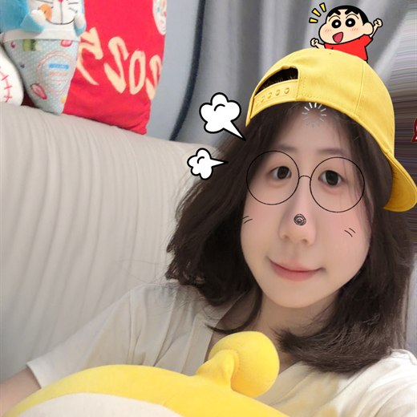
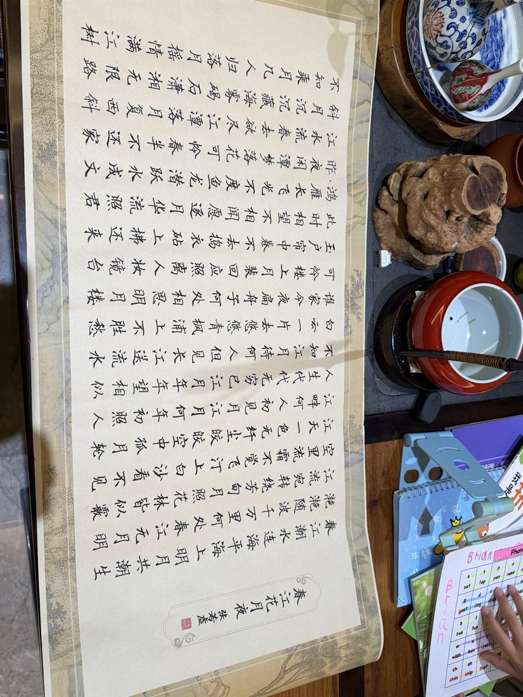
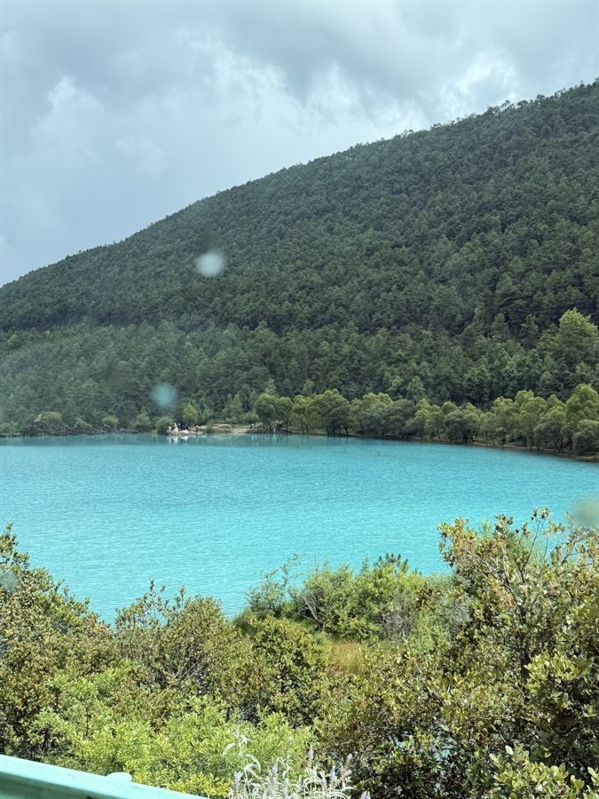
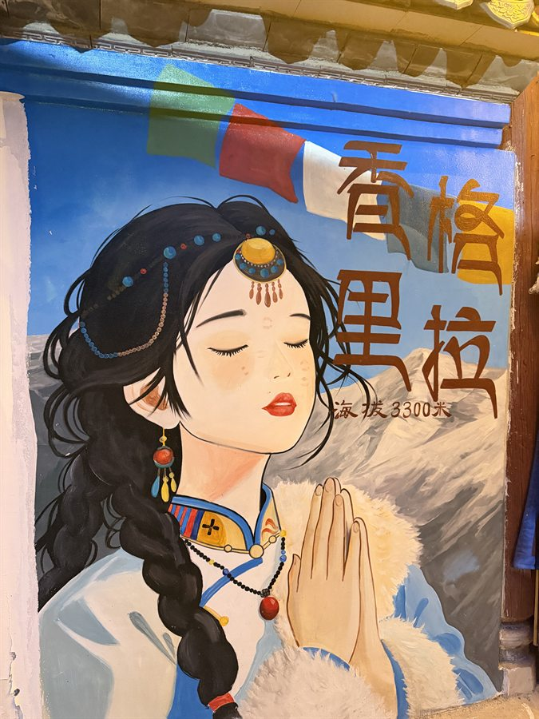
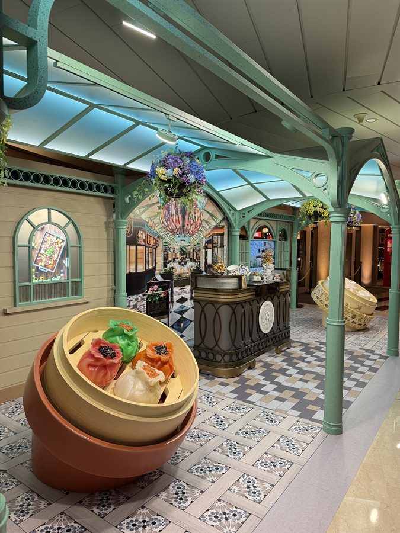
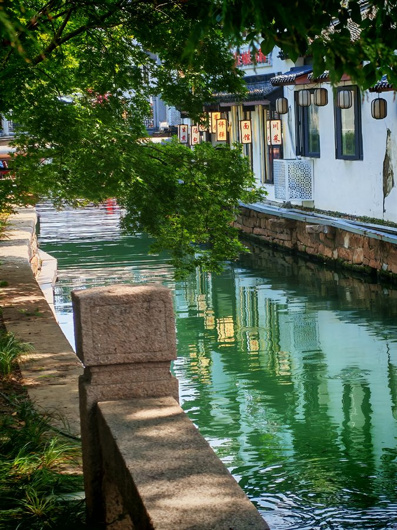
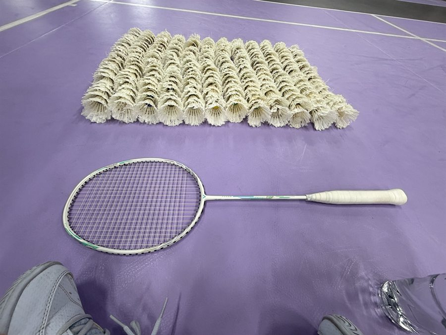
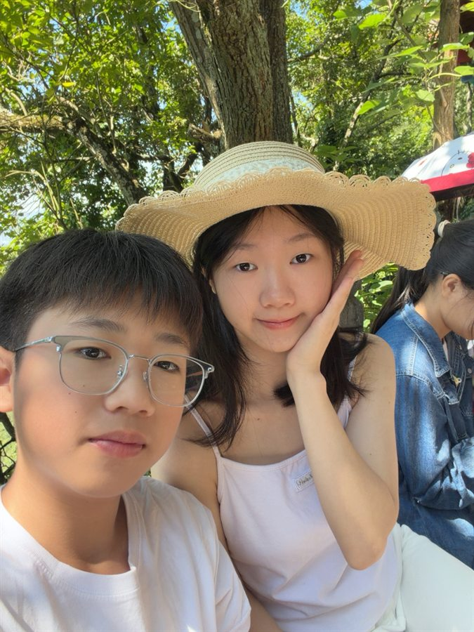
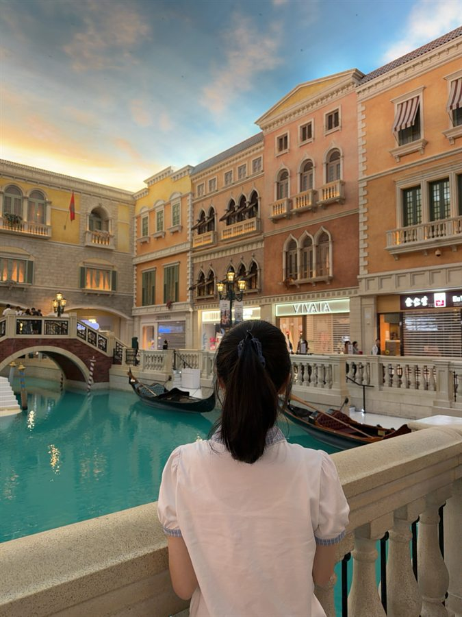
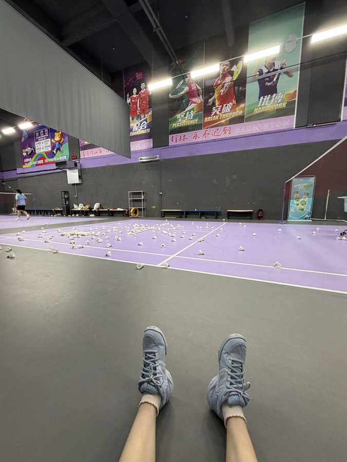

贪吃蛇（含 AI 自动模式）
纯前端单文件，能自己玩；AI 模式自动寻路，实测最高连续吃满 71 个食物不死（指标是 15 个），另加主题切换功能。

广东工业大学 · 集成电路设计与集成系统创新班 · 想往数字 IC 的芯片验证方向走
我是陈一菲，来自广东湛江，现在在广东工业大学读集成电路设计与集成系统创新班，大一。 想往数字 IC 方向走，最感兴趣的是里面的芯片验证。
我的特点是对"发现问题"上瘾：别人做到能跑通就收工了，我总忍不住再回头多看两遍—— 在所有人都以为"这没问题"的地方找出一处漏洞、一个藏得很深的 bug，对我来说是件特别有成就感的事。 而验证做的正好是这个：在设计被认为"应该没问题"的时候，把意外情况提前找出来。 所以我很确定自己想往这个方向钻。
我比较耐心、细心，也沉得下心，能安安静静地对着一个问题和它死磕到底； 同时我很外向、开朗活泼，喜欢和人打交道，团队里有事很少等着别人先开口。 抗压能力还不错，心态比较稳，交给我的事会负责到底，也总想把它做到最好。
这个网站是我用 HTML 和 CSS 做的，代码放在 GitHub 仓库 里，用 GitHub Pages 免费托管。
纯前端单文件，能自己玩；AI 模式自动寻路，实测最高连续吃满 71 个食物不死（指标是 15 个），另加主题切换功能。
RC 低通滤波、戴维南定理验证、NMOS 共源放大电路，每个电路都做了手算与仿真的对比。
就是你现在看到的这个页面，手写 HTML / CSS，部署在 GitHub Pages 上。
如果有一天在图书馆找不到我，我大概在做三件事之一：在球场上、在练字、或者在去下一座城市的路上。
我喜欢把生活拍下来。不是为了发朋友圈，而是因为过一阵子再回头看， 当时的光线、吃到的味道、和谁待在一起，都会一下子回来。









老家湛江是一座靠海的城市，海鲜和糖水都很出名。每周固定打羽毛球， 练书法的时候心会静下来，看完书总想写点什么记下来；出门旅游先找当地小吃，边吃边拍照。 喜欢热闹的烟火气，也喜欢认识不同的人。